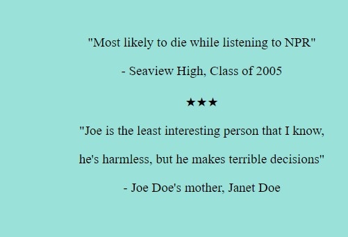
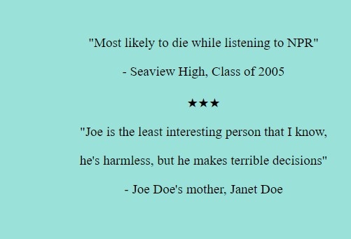

Once upon a time there was a man named Joe Doe. Joe Doe was very boring, and not very smart. He lived by himself in a beige colored house, with beige colored walls, and three dying plants in the front yard.
Joe used to work for a gravel company, but got fired for driving the concrete roller home after he missed the bus. Joe just got a job as an accountant! Congratulations Joe!
Joe is looking forward to going to work, but it's a long commute, and he doesn't have a car. Can you help Joe get to work on time?
★★★